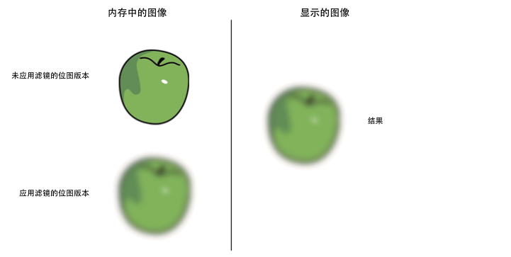
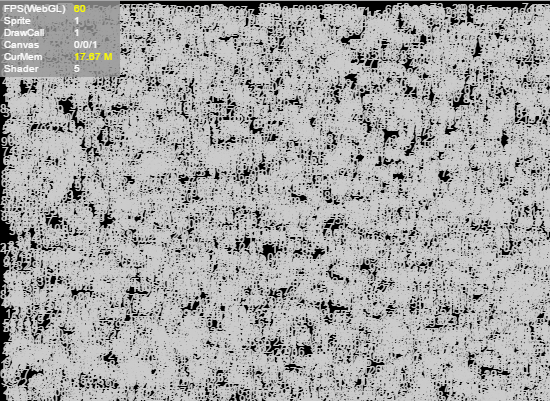

Performance optimization
1. Memory optimization method
1.1 Optimize memory through object pool
Object pool optimization is a very important optimization method in game development and is also one of the important factors affecting game performance. There are many objects in the game that are constantly being created and removed, such as the creation and removal of character attack bullets, special effects, the destruction and refreshing of NPCs, etc. The creation process consumes a lot of performance, especially when the number is large. . Object pool technology can solve the above problems very well. When objects are removed and disappear, they are recycled to the object pool. When new objects are needed, they are directly taken out of the object pool and used. The advantage is that it reduces the overhead when instantiating the object, allows the object to be used repeatedly, and reduces the chance of new memory allocation and garbage collector running. Note: When the object is removed, it is not immediately erased from the memory. Only when the memory is deemed to be insufficient, the garbage collection mechanism will be used to clear it. Clearing is very memory intensive and may cause lag. Using the object pool will reduce the garbage objects of the program and effectively improve the running speed and stability of the program.
For specific usage, please refer to the "Object Pool" document
1.2 Release memory
The JavaScript runtime cannot start the garbage collector. To ensure that an object can be recycled, all references to the object need to be deleted. The destroy() method provided by Sprite will help set the internal reference to null.
For example, the following code ensures that the object can be garbage collected:
//Create a Sprite instance
var sp:Laya.Sprite = new Laya.Sprite();
//Set the sp internal reference to null
sp.destroy();
When an object is set to null, it is not immediately removed from memory. The garbage collector will only run when the system thinks memory is low enough. Memory allocation (not object deletion) triggers garbage collection.
Garbage collection can consume a lot of CPU during garbage collection and affect performance. Try to limit the use of garbage collection by reusing objects. Also, set references to null whenever possible so that the garbage collector spends less time looking for the object. Sometimes (for example, two objects refer to each other), it is impossible to set both references to null at the same time. The garbage collector will scan the unreachable objects and clear them, which will consume more performance than reference counting.
1.3 Resource uninstallation
There are always many resources loaded when the game is running. These resources should be unloaded in time after use, otherwise they will remain in the memory.
The following example shows how to compare the resource status before and after loading the resource:
var assets: Array<any> = []
assets.push("resources/apes/monkey0.png");
assets.push("resources/apes/monkey1.png");
assets.push("resources/apes/monkey2.png");
assets.push("resources/apes/monkey3.png");
Laya.loader.load(assets).then(()=>{
for(var i:number = 0, len: number = assets.length; i<len; ++i)
{
var asset:string = assets[i];
//Check the log, the resource has been in memory before cleaning
console.log(Laya.loader.getRes(asset));
//Call the cleanup method
Laya.loader.clearRes(asset);
//Check the log. After cleaning, the resource is uninstalled.
console.log(Laya.loader.getRes(asset));
}
});
1.4 About filters and masks
Try to minimize the use of filter effects. When filters (BlurFilter and GlowFilter) are applied to a display object, two bitmaps are created in memory at runtime. Each bitmap is the same size as the display object. The first bitmap is created as a rasterized version of the display object and then used to generate another bitmap with the filter applied:

(Picture 1-1)
Two bitmaps in memory when applying filter
When one of the properties of the filter or display object is modified, both bitmaps in memory are updated to create the resulting bitmap, which can take up a lot of memory. In addition, this process involves CPU calculations, which will reduce performance when updated dynamically.
ColorFiter's GPU consumption under WebGL is negligible.
As a best practice, whenever possible, use bitmaps created with image authoring tools to simulate filters. Avoiding creating dynamic bitmaps at runtime can help reduce CPU or GPU load. Especially an image that has a filter applied and is not being modified.
2. Rendering optimization method
2.1 Optimize Sprite
Try to reduce unnecessary levels of nesting and reduce the number of Sprites.
Try to remove objects in non-visible areas from the display list or set visible=false.
For containers with a large amount of static content or content that changes infrequently (such as buttons), you can set the cacheAs attribute for the entire container, which can greatly reduce the number of Sprites and significantly improve performance. If there is dynamic content, it is best to separate it from the static content so that only the static content is cached.
In the Panel, direct sub-objects outside the panel area (the sub-objects of the sub-objects cannot be judged) will not be rendered. Sub-objects beyond the panel area will not be consumed.
2.2 Optimize DrawCall
- Setting cacheAs for complex static content can greatly reduce DrawCall. Making good use of cacheAs is the key to game optimization.
- Try to ensure that the rendering order of pictures in the same atlas is next to each other. If different atlases are cross-rendered, the number of DrawCalls will increase.
- Try to ensure that all resources in the same panel use one atlas, which can reduce submission batches.
2.3 Optimizing Canvas
When optimizing Canvas, we need to pay attention not to use cacheAs in the following situations:
- The object is very simple, such as a word or a picture. Setting cacheAs="bitmap" will not only not improve performance, but will also cause performance loss.
- There are frequently changing contents in the container, such as an animation or countdown in the container. If cacheAs="bitmap" is set to this container, performance will be lost.
You can determine whether the Canvas cache is being refreshed by looking at the first value of the Canvas statistics.
2.4 CacheAs
Setting cacheAs can cache the display object as a static image. When cacheAs is used, if the sub-object changes, it will be automatically re-cached. At the same time, the reCache method can also be manually called to update the cache. It is recommended to cache complex content that does not change frequently as static images, which can greatly improve rendering performance. cacheAs has three optional values: "none", "normal" and "bitmap".
- The default is "none", no caching is done.
- When the value is "normal", command caching is performed.
- When the value is "bitmap", use renderTarget cache. It should be noted here that the renderTarget cache mode under webGL has a size limit of 2048. Exceeding 2048 will increase additional memory overhead. In addition, the overhead of continuous redrawing is relatively high, but drawcalls will be reduced and rendering performance will be the highest. The command cache mode under webGL will only reduce node traversal and command organization, but will not reduce drawcalls, and the performance is medium.
After setting cacheAs, you can also set staticCache=true to prevent automatic updating of the cache, and you can manually call the reCache method to update the cache.
cacheAs mainly improves performance in two ways. One is to reduce node traversal and vertex calculation; the other is to reduce drawCall. Making good use of cacheAs will be a powerful tool for engine optimization performance.
The following example draws 10,000 texts (depending on computer performance, this example is 10,000):
class Test {
private text:Laya.Text;
constructor() {
Laya.init(550,400,Laya.WebGL);
Laya.Stat.show();
var textBox=new Laya.Sprite();
for(var i=0;i<10000;i++)
{
this.text=new Laya.Text();
this.text.text=(Math.random()*100).toFixed(0);
this.text.color="#CCCCCC";
this.text.x=Math.random()*550;
this.text.y=Math.random()*400;
textBox.addChild(this.text);
}
Laya.stage.addChild(textBox);
}
}
The following is a screenshot of the runtime on the author's computer. The FPS is stable at around 52.

(Figure 2-1)
When we set the container where the text is located to cacheAs, as shown in the example below, the performance is greatly improved, and the FPS reaches 60 frames.
//...Omit other code
var textBox=new Laya.Sprite();
textBox.cacheAs="bitmap";
//...Omit other code

(Figure 2-2)
2.5 Text Stroke
At runtime, text with a stroke calls the drawing command one more time than text without a stroke. At this time, the CPU usage of text is proportional to the number of texts. Therefore, try to use alternatives to accomplish the same needs.
· For text content that rarely changes, cacheAs can be used to reduce performance consumption.
· For text fields whose content changes frequently but uses a small number of characters, you can choose to use bitmap fonts.
2.6 Skip text formatting and render directly
In most cases, a lot of text does not require complex typesetting and simply displays a line of text. In order to cater to this demand, Text provides a method called changeText that can directly skip typesetting.
this.text.text="text";
Laya.stage.addChild(this.text);
//The text content is only updated later. Using changeText can improve performance.
this.text.changeText("text changed.");
Text.changeText will directly modify the last instruction for drawing the text in the drawing instruction. This behavior of the previous drawing instruction still existing will cause changeText to be used only in the following situations:
· The text is always one line.
· The style of the text is always the same (color, weight, italics, alignment, etc.).
Even so, such needs are still often used in actual programming.
3. Reduce CPU usage
3.1 Reduce dynamic attribute lookup
Any object in JavaScript is dynamic and you can add attributes at will. However, searching for an attribute among a large number of attributes can be time-consuming. If you need to use a certain attribute value frequently, you can use a local variable to save it:
foo()
{
var prop=this.target.prop;
//use prop
this.process1(prop);
this.process2(prop);
this.process3(prop);
}
3.2 Recovery of performance consumption
When using functions that consume performance every day, especially loop processing, when not in use, be sure to recycle them in time or stop the loop.
LayaAir provides two timer loops to execute code blocks.
- The execution frequency of
Laya.timer.frameLoopdepends on the frame frequency. The current frame rate can be viewed through Stat.FPS.
- The execution frequency of
Laya.timer.loopdepends on the time specified by the parameter.
Laya.timer.frameLoop(1, this, this.animateFrameRateBased);
Laya.stage.on("click", this, this.dispose);
dispose()
{
Laya.timer.clear(this, this.animateFrameRateBased);
}
When the life cycle of an object ends, remember to clear its internal Timer
3.3 How to obtain the boundary of the displayed object
In relative layout, it is often necessary to correctly obtain the bounds of the displayed object. There are many ways to get the boundaries of the displayed object, and it is necessary to know the differences.
- Use getBounds/getGraphicBounds.
var sp=new Laya.Sprite();
sp.graphics.drawRect(0,0,100,100,"#FF0000");
var bounds:Laya.Rectangle=sp.getGraphicBounds();
Laya.stage.addChild(sp);
getBounds can meet most needs, but because it needs to calculate the boundary, it is not suitable for frequent calls.
- Set the container's autoSize to true.
var sp=new Laya.Sprite();
sp.autoSize=true;
sp.graphics.drawRect(0,0,100,100,"#FF0000");
Laya.stage.addChild(sp);
The above code can correctly obtain the width and height at runtime. autoSize will be recalculated when the width and height are obtained and the state of the display list changes (autoSize calculates the width and height through getBoudns). So it is not advisable to apply autoSize to a container with a large number of sub-objects. If size is set, autoSize will not take effect.
Get the width and height after using loadImage:
var sp=new Laya.Sprite();
sp.loadImage("res/apes/monkey2.png",0,0,0,0,Laya.Handler.create(this,function()
{
console.log(sp.width,sp.height);
}));
Laya.stage.addChild(sp);
loadImage can correctly obtain the width and height only after the callback function after loading is triggered.
- Directly call the size setting:
Laya.loader.load("res/apes/monkey2.png",Laya.Handler.create(this,function()
{
var texture=Laya.loader.getRes("res/apes/monkey2.png");
var sp=new Laya.Sprite();
sp.graphics.drawTexture(texture,0,0);
sp.size(texture.width,texture.height);
Laya.stage.addChild(sp);
}));
Using Graphics.drawTexture does not automatically set the width and height of the container, but you can use the width and height of the Texture to assign it to the container. Needless to say, this is the most efficient way.
Note: getGraphicsBounds is used to obtain the width and height of vector drawing.
3.4 Change frame rate based on activity status
There are three modes of frame rate,
Stage.FRAME_FAST
In fast mode, the maximum FPS is the maximum frame rate of the monitor. If the maximum frame rate of the monitor is 60, then the maximum FPS is 60. If the maximum frame rate of the monitor is 120, then the maximum FPS is 120.
Stage.FRAME_SLOW
In slow mode, the maximum FPS is half of the monitor's maximum frame rate. During the game running, the engine will discard every other frame. If it can actually reach 40 frames, then the final frame rate of the game is only 20. If the frame rate can reach 100, then the final frame rate can only be 50.
Stage.FRAME_MOUSE
Mouse mode selectively switches between fast mode and slow mode. Sometimes the game does not need to be executed at full frame rate. For example, at 60 frames full frame, 30FPS can already meet the response of human vision in most cases, but mouse interaction At this time, 30FPS may cause incoherence in the picture, so Stage.FRAME_MOUSE came into being.
The following example shows moving the mouse on the canvas at the frame rate of Stage.FRAME_SLOW so that the ball follows the movement of the mouse:
Laya.init(this.Browser.width,this.Browser.height);
Laya.Stat.show();
Laya.stage.frameRate=Laya.Stage.FRAME_SLOW;
var sp=new Laya.Sprite();
sp.graphics.drawCircle(0,0,20,"#990000");
Laya.stage.addChild(sp);
Laya.stage.on(Laya.Event.MOUSE_MOVE,this,function()
{
sp.pos(Laya.stage.mouseX,Laya.stage.mouseY);
});

(Figure 3-1)
At this time, the FPS displays 30, and when the mouse moves, you can feel that the update of the ball position is inconsistent. Set Stage.frameRate to Stage.FRAME_MOUSE:
Laya.stage.frameRate = Laya.Stage.FRAME_MOUSE;

(Figure 3-2)
At this time, after moving the mouse, the FPS will display 60, and the screen smoothness will be improved. After the mouse remains motionless for 2 seconds, FPS will return to 30 frames.
3.5 Using callLater
callLater delays the execution of the code block until before rendering of this frame. If the current operation frequently changes the state of an object, you may consider using callLater to reduce repeated calculations.
Consider a figure for which setting any appearance-changing properties will cause the figure to be redrawn:
var rotation=0,
scale=1,
position=0;
private function setRotation(value):void
{
this.rotation=value;
update();
}
private function setScale(value):void
{
this.scale = value;
update();
}
private function setPosition(value):void
{
this.position = value;
update();
}
public function update()
{
console.log('rotation: ' + this.rotation + '\tscale: ' + this.scale + '\tposition: ' + this.position);
}
Call the following code to change the status:
setRotation(90);
setScale(2);
setPosition(30);
The printed result of the console is:
rotation: 90scale: 1position: 0
rotation: 90scale: 2position: 0
rotation: 90scale: 2position: 30
update was called three times, and the final result was correct, but the first two calls were unnecessary.
Try changing the three updates to:
Laya.timer.callLater(this, update);
At this time, update will only be called once, and it is the result we want.
3.6 Picture/Atlas Loading
After completing the loading of images/atlases, the engine will start processing image resources. If an image gallery is loaded, each sub-image will be processed. If a large number of images are processed at one time, this process may cause lengthy delays.
In the resource loading of the game, resources can be loaded according to levels, scenes, etc. The fewer images you have to process at the same time, the more responsive the game will be at that time. After the resource is used, it can also be unloaded to release memory.
4. Other optimization strategies
4.1 Reduce the number of particles used
Since particles are vector drawing, using a large number of particles will put a lot of pressure on the CPU. However, GPU computing can be used in WebGL mode, which can reduce the pressure on the CPU. However, it should be controlled as much as possible, especially on mobile platforms, to reduce usage.
4.2 Minimize the use of rotation, scaling, alpha and other attributes
Attributes such as rotation, scaling, alpha, etc., these attributes will consume performance, but the engine uses WebGL rendering mode, which greatly optimizes performance.
4.3 Do not create objects and complex calculations in Timer loops
Since the loop() and frameLoop() methods of Timer will be continuously executed in a loop, when creating objects and complex calculations, it will cause a lot of performance consumption in the loop. Therefore, try not to create objects in the loop as much as possible. Objects and complex calculations.
4.4 Use autoSize and getBounds as little as possible
autoSize() and getBounds() require a lot of calculations and have a great impact on performance, so use them as little as possible.
4.5 The execution of functions caught by try catch will become very slow
Try to reduce the use of try catch in the project. The execution of functions caught by try catch will become very slow.
5. Use chrome’s performance analyzer
Performance Analyzer (Profiles) is part of the chrome developer tools. You can open the chrome developer tools by right-clicking on the page and selecting Inspect Element or pressing F12 on the Google Chrome page. Then click Profiles to switch to the Performance Analyzer (Profiles) panel.
5.1 CPU usage analysis
Start CPU Performance Analyzer
Select Record JavaScript CPU Profile and click the Start button or the solid dot in the upper left corner. At this time, Chrome will start to record the execution of the method of the current web page. As shown in Figure 5-1.
 (Figure 5-1)
(Figure 5-1)
End the monitoring of CPU performance analyzer
To end the monitoring recording of this performance analyzer, click the Stop button (or the solid red circle on the left). As shown in Figure 5-2.
 (Figure 5-2)
(Figure 5-2)
View CPU Performance Analyzer records
After monitoring ends, a monitoring result file will be listed under Profiles on the left. Click to open this monitoring result file. As shown in Figure 5-3
 (Figure 5-3)
(Figure 5-3)
Monitoring results are displayed in the form of data tables. We can find the function names provided in Function based on the consumption ranking, and optimize the places where performance consumption is large.
5.2 Memory usage analysis
Start memory analysis
Select Take Heap Snapshot and click the Take Snapshot button (you can also click the black solid circle on the left), as shown in Figure 5-4.
 (Figure 5-4)
(Figure 5-4)
The generated memory snapshot file records the number of current web page objects, the memory size occupied, etc. in the form of a data table.
Memory snapshot record
After starting memory analysis, a memory snapshot record file of the current web page will be generated soon under the Profiles column on the left. Click to view relevant data, as shown in Figure 5-5.
 (Figure 5-5)
(Figure 5-5)
Memory snapshot analysis
After taking the first memory snapshot, click the dot in the upper left corner to record a new memory snapshot. Click to select the second memory snapshot to select the Comparison mode that changes between this second snapshot and the first snapshot. Optimize web pages through analysis.

(Figure 5-6)

(Figure 5-7)
6. Use of texture compression
Benefits of using texture compression:
Reduce memory, especially for mobile applications. The memory usage should not be too large, otherwise low-end machines will easily crash.
Reduce bandwidth. For mobile game applications, a large number of textures will be transferred to the GPU during rendering. If there is no limit, it will not only seriously affect the rendering performance, but also cause serious heat generation.
For specific usage, please refer to the "Texture Compression" document